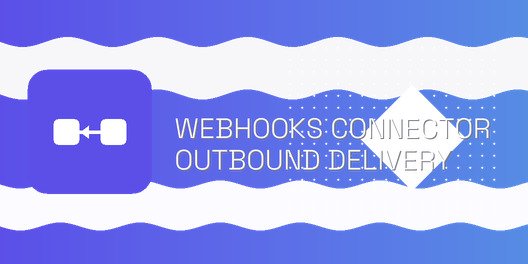

Bitwise Connector Webhooks Outbound provides an opt-in mixin
(bwt.connector.webhook.outbound.mixin) that connector backends inherit to
gain fully automated outbound webhook provisioning and delivery. Endpoints are
templated, provisioned, and linked automatically; deliveries are built and queued via
queue_job.
connector_backend_ref on outbound endpoints and a computed outbound_endpoint_id on the backend_handle_outbound_webhook_delivery(delivery, request)) routed via the framework's _invoke_handler_handle_outbound_webhook_response(delivery, response, state, outcome, *, binding, operation)) with the binding and operation pre-resolved by the overlay_get_outbound_api_base_url(delivery) and _get_outbound_extra_headers(delivery) consumed by the framework when rendering the URL and merging request headersqueue_outbound_delivery) and get_outbound_endpoint resolverbwt_connector_webhooks_corebwt_webhooks_outbound
Developed by Bitwise Technologies LLC.
Contributors: Youssef Egla.